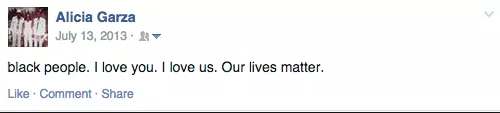

Black Lives Matter
A national, decentralized civil rights movement aimed at promoting black rights and validity.
History
Black Lives Matter began as a reaction to the acquittal of George Zimmerman, 17-year-old Trayvon Martin's murderer.
In response to the anti-Black racism, as well as Michael Brown's death and the massacre at Emanuel A.M.E. Church, Alicia Garza coined the phrase "black lives matter" in a Facebook post in July 2013.


Patrisse Cullor created a hashtag, #Black Lives Matter, turning the phrase eventually into a political force with a strong social media presence.
Spurred by the killing of Michael Brown in Ferguson by a police officer, Black Lives Matter developed weaponized protests and a focus on gender, identity, and social inequality, appealing to college campuses across the U.S.
Current Events
Recently, with the 2016 election underway, Black Lives Matter has attempted to disrupt Democratic campaigns to leverage influence since 90% of African Americans are Democratic.
Thanks to the development of technology, social media has greatly contributed to building the movement and creating a platform for social movements. However, on the flip side, social media can also pose a threat to movements and direct threats towards Black Lives Matter leaders.